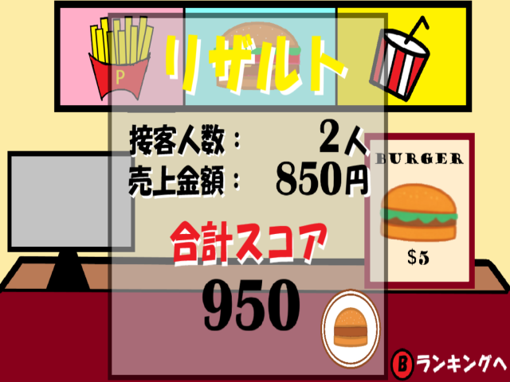
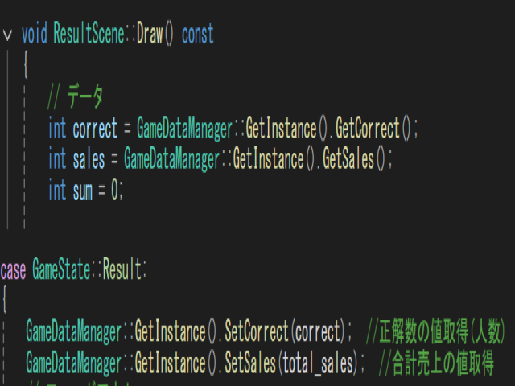
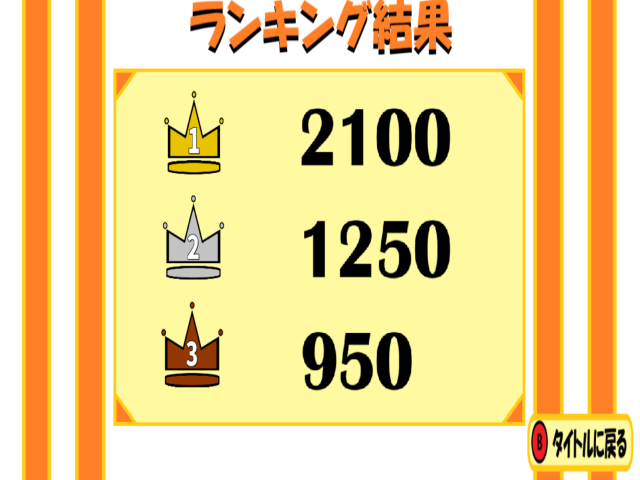
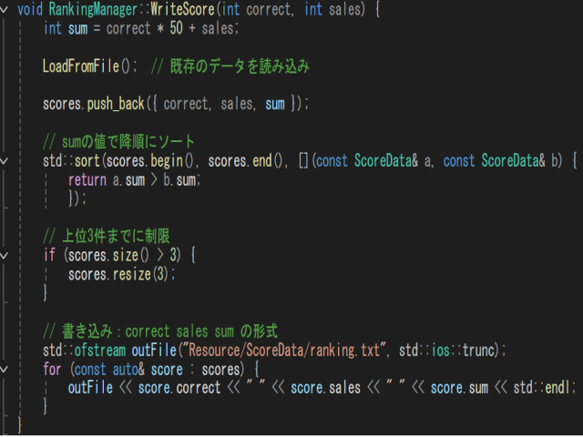

作品概要
本作品は、コントローラーを使用し、次々に来店するお客様の注文に応じてバーガーを作成し提供するゲームです。
プレイヤーは制限時間内に正確かつ素早く操作を行う必要があり、判断力と操作力が求められます。
注文内容は徐々に複雑になり、ゲームの進行に伴って難易度が上昇する設計となっています。
また、プレイ結果を確認できるリザルト機能やランキング機能も実装しており、繰り返し遊びながらスコア更新を目指せる構成としています。

本作品は、コントローラーを使用し、次々に来店するお客様の注文に応じてバーガーを作成し提供するゲームです。
プレイヤーは制限時間内に正確かつ素早く操作を行う必要があり、判断力と操作力が求められます。
注文内容は徐々に複雑になり、ゲームの進行に伴って難易度が上昇する設計となっています。
また、プレイ結果を確認できるリザルト機能やランキング機能も実装しており、繰り返し遊びながらスコア更新を目指せる構成としています。
以下の動画は本作品の紹介動画です。ゲームの流れや操作の様子をご確認いただけます。
シミュレーションゲーム／タイムマネジメントゲーム
Visual Studio 2022／C・C++
約3か月
3人
ランキングおよびリザルトシーンの実装を中心に担当しました。
また、ゲーム内で使用するイラストの制作にも携わり、視覚的な表現の向上にも貢献しました。
本作品は、東京ゲームショウ（TGS）への出展を目標として制作しました。
来場者に実際にプレイしていただき、その評価によって作品の完成度が問われる環境であったため、
短時間でも直感的に楽しめるゲーム体験を重視して設計しました。
また、多くの人に触れてもらうことを前提に、操作性や分かりやすさを意識した開発を行いました。
本制作では、ゲーム内で使用するイラスト制作にも挑戦しました。
これまでプログラム中心であったため、新たにビジュアル制作にも関わることで表現の幅を広げることができました。
また、ランキングやリザルトといったゲームの結果処理部分についても担当し、これまで経験のなかった処理の実装に取り組みました。
役割の幅を広げることで、開発全体を俯瞰して捉える視点を養うことができました。
ゲームメインからリザルト画面へスコアや情報を受け渡す処理を実装しました。
シーン遷移後も必要なデータを保持できるように設計し、結果表示が正しく行われるよう工夫しました。
データの管理方法を整理することで、安定したシーン遷移と再利用性の高い構造を実現しています。


リザルト画面で得られたスコアをもとにランキングへ反映する処理を実装しました。
スコアの比較や並び替えを行い、順位が正しく表示されるように工夫しました。
また、プレイヤーが結果を直感的に理解できるよう、表示内容や構成にも配慮しています。


本制作を通して、自分の興味や関心を持った分野には積極的に挑戦することの重要性を学びました。
新しい分野に取り組むことで、自身のスキルの幅を広げられることを実感しました。
また、制作の中で得た経験は次の開発に活かすことができるため、失敗を恐れず行動することの大切さを理解しました。
今後は挑戦と改善を繰り返しながら、より完成度の高い作品制作へとつなげていきたいと考えています。